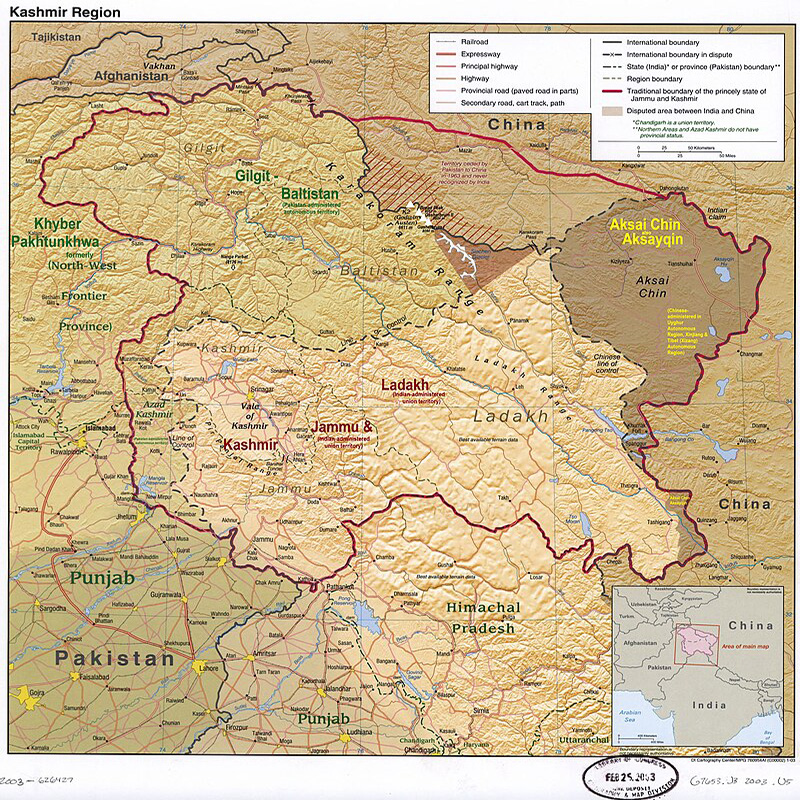
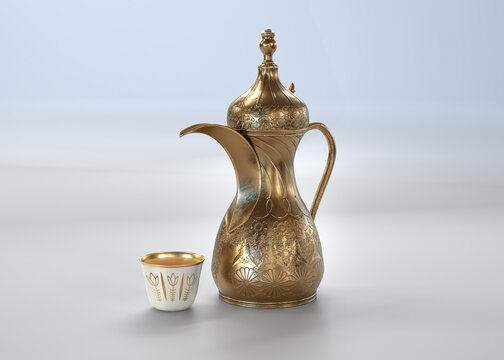

Gilgit
Baltistan
Gilgit Baltistan
Gilgit-Baltistan: A Mountain Paradise Imagine a place where towering mountains touch the sky, glaciers sparkle like giant ice creams, and crystal-clear lakes mirror the beauty around them. That's Gilgit-Baltistan for you! It's a magical land tucked away in northern Pakistan. People from all over the world come to Gilgit-Baltistan to experience its thrilling adventures. You can hike up amazing mountains, trek through valleys filled with colorful flowers, and even go ice skating on frozen lakes. If you love animals, you might spot rare ibex or graceful marmots. But it's not just about adventure. Gilgit-Baltistan is also home to friendly people with fascinating cultures. They have their own special languages, music, and dances. You can learn about their traditions and enjoy delicious local food. Whether you're a thrill-seeker, a nature lover, or just curious about different cultures, Gilgit-Baltistan has something for everyone. It's a place where you can make unforgettable memories and feel like you're in a real-life fairy tale.

Gilgit Baltistan
Culture
Gilgit-Baltistan is a melting pot of different cultures. People from various ethnic groups live together in harmony, each with their own unique traditions and customs. You'll find people speaking different languages like Shina, Balti, Burushaski, and Wakhi. Despite these differences, they share a deep love for their mountains and a strong sense of community. Their culture is a beautiful mix of old traditions and modern life. You can see this in their colorful festivals, traditional music and dance, and delicious local food. People in Gilgit-Baltistan are known for their warm hospitality. They'll welcome you with open arms and share their culture with you. It's a place where you can learn about different ways of life and appreciate the beauty of diversity.
Gilgit Baltistan Foods
Gilgit-Baltistan is famous not just for its stunning mountains, but also for its delicious food! The cold climate means food is hearty and flavorful. One popular dish is Palaw, a kind of pilaf made with rice, meat, and lots of dried fruits. Another yummy option is Chapatti with Keema, which is flatbread with a spicy minced meat sauce. If you have a sweet tooth, try Apricot Jam or Walnut Cake. These are made from fresh, local ingredients and taste amazing! Remember, the food in Gilgit-Baltistan is a big part of its culture, so it's always fun to try something new!

Thukpa
Thukpa is a hearty noodle soup, perfect for chilly days! It's packed with flavor from a rich broth, chewy noodles, and lots of veggies or meat. Think of it as a warm hug in a bowl!

Momo
Momos are delicious dumplings filled with meat or veggies. They're usually steamed but can also be fried or served in soup. Best enjoyed with a spicy dipping sauce!
Gyal
Gyal, or butter tea, is a salty, creamy drink loved in the Himalayas. It's made from tea, yak butter, salt, and sometimes hot water. Some people love it, others not so much. It's definitely worth a try!
Harissa
Harissa is a yummy, thick porridge made from wheat. It's like a warm, comforting hug on a cold day! People often add butter, sugar, or honey to make it extra tasty. It's a popular breakfast food in many parts of the world.
Chapshoro
Chapshoro is like a yummy pocket of goodness! It's bread filled with tasty meat or veggies. Imagine a warm hug in your hands, filled with delicious flavors. Perfect for a quick and satisfying meal!
Shapaley
Shapaley are yummy patties filled with meat or veggies! They're like little flavor bombs that you can eat on their own or with bread. Think of them as mini pizzas without the crust!

Qahwa
Qahwa is a super tasty tea with a special flavor! It's like cozying up with a warm hug in a cup. People add yummy spices like cinnamon and cardamom to make it extra delicious. It's perfect for chilly days or any time you want to feel happy!
Diram
Diram are special noodles made from buckwheat, a kind of grain. They're chewy and yummy! They're often served in soups or stir-fries. Think of them as a fun, different kind of noodle to try!
Chamus
Chamus is a super tasty, dried and smoked meat. It's like beef jerky but even better! It's a perfect snack for adventures or when you're feeling hungry. It's packed with protein and flavor!
Kulcha
Kulcha is a soft, fluffy bread that's super yummy! It's often stuffed with yummy things like potatoes, onions, or paneer. It's perfect for dipping in your favorite sauce or chutney.
Sajji
Sajji is super yummy meat cooked on a big stick over hot coals. It's usually made with goat or lamb, and it's super juicy and flavorful. Imagine the best barbecue you've ever had, but even better!
Harissa Katrot
Harissa Katrot is a super yummy bowl of warm, thick porridge! It's like a cozy hug on a cold day. It's made even better with crunchy nuts and sweet dried fruits. Think of it as a delicious and healthy breakfast!